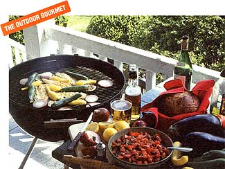

WILLING AS MANY OF US are to make some changes in our eating habits in order to improve our health, along comes summer grilling, and all bets are off: In this country, cooking out means hot dogs, hamburgers and steaks.
But the people who worry about the amount of fat in our diets would prefer that we choose something else to cook outdoors. To tell the truth, they'd just as soon we cut back on charcoal grilling, period.
As the U.S. Department of Health and Human Services says in its brochure Diet, Nutrition and Cancer Prevention, "You don't have to give up any of the foods you like to protect against cancer risks. The idea is to choose more often the foods that may reduce your risk of cancer. Changing the way you prepare your favorite foods also may help."
In the less-often category are fatty foods and charcoal broiling-especially charcoal-broiled meats, which, on the grill, create compounds thought to be carcinogenic. According to the American Institute of Cancer Research, however, "there is no evidence that the occasional summer cookout will increase cancer risk, particularly when done in accordance with other tips in this brochure." Those include the following:
Eat less meat. Since high levels of fat and protein found in meat may be associated with increased risk of cancer, the amount of meat you eat can be as important as how you cook it.
Select meats low in fat. The more fat in charcoal-broiled meat, the greater the production of carcinogens. Trim off excess fat.
Substitute fish or poultry (with skin and fat removed) for more fatty meats.
Cook the meat until done, without charring it.
Remove any charred material that does form on the food.
Don't overcook.
Discourage flare-ups. Burning juice or fat adds nothing to the charcoal flavor of food but can produce harmful smoke.
Fortunately, it's no hardship to follow these recommendations. Ask any fisherman about freshly caught fish, its sweetness enhanced by a light smoking over charcoal. Charcoal grilling performs the same magic on vegetables.
Not counting the time it takes for the fire to reach the proper temperature-usually 30 minutes -preparation and cooking take 20 minutes or less. The vegetables are cut so that they cook quickly. And the shorter the time they are exposed to the fire and smoke, the less smoke they absorb.
Served with crusty, whole-grain bread and topped off by a dessert of fresh fruit, grilled fish and vegetables provide a healthful, delicious meal.
4 small yellow squash
4 small zucchini
3 medium-large red onions
1 eggplant, about 11/4 pounds
Good-quality olive oil for brushing
Prepare charcoal fire.
Wash and trim vegetables. Peel onions. Slice yellow squash and zucchini lengthwise in half. Cut onions and eggplant into 1/4"-thick slices. Brush all sides of the vegetables with olive oil.
Arrange on the grill over medium fire, and cook 4-7 minutes on each side, depending on heat of fire and size of vegetables. Zucchini and yellow squash should be ready first, then eggplant and finally onions. The squashes and eggplant should be quite soft, the onions soft and slightly charred. Turn vegetables several times; baste with brushed-on olive oil as necessary.
Remove each vegetable to serving platter when it's ready. Since this food tastes best at room temperature, it's not important for all vegetables to be ready at the same time.
Grilled Fish on Cold Tomato Vinaigrette
1 1/2 pounds skinned and boned fish fillets (from firm fish)
4 tablespoons good-quality olive oil, plus a little extra for brushing
4 tablespoons balsamic vinegar
3 teaspoons ground coriander
1 1/4 teaspoons minced fresh garlic
1 tablespoon minced fresh parsley
1 tablespoon minced fresh tarragon
2 1/2 teaspoons minced fresh oregano
5 ripe, medium-large tomatoes
Freshly ground pepper to taste
Prepare charcoal fire in grill. Wash, dry, and lightly brush fish with olive oil.
Beat together the 4 tablespoons oil, vinegar, coriander and garlic in medium-sized bowl. Add minced parsley, tarragon and oregano to dressing. Core and coarsely chop tomatoes; add to dressing with pepper.
Place fish fillets on greased grate of grill, and grill according to the Canadian rule: Measure fish at thickest part, and allow 10 minutes per inch-e.g., if fillet is 1/2" thick, cook 5 minutes. Turn halfway through cooking. Baste with oil as necessary. Fish is done when it begins to flake. (If fish is ready before grilled vegetables, remove from grill. Fish does not have to be served hot; it tastes equally good warm.)
Spoon a bit of the tomato vinaigrette on each of 4 plates; then arrange 1/4 of the fish on each plate, and spoon on remaining tomatoes. Serves 4.
Marian Burros is a food columnist for the New York Times. These recipes are adapted from her latest book, 20-Minute Menus (Simon and Schuster, $19.95).
|
 |
|
|